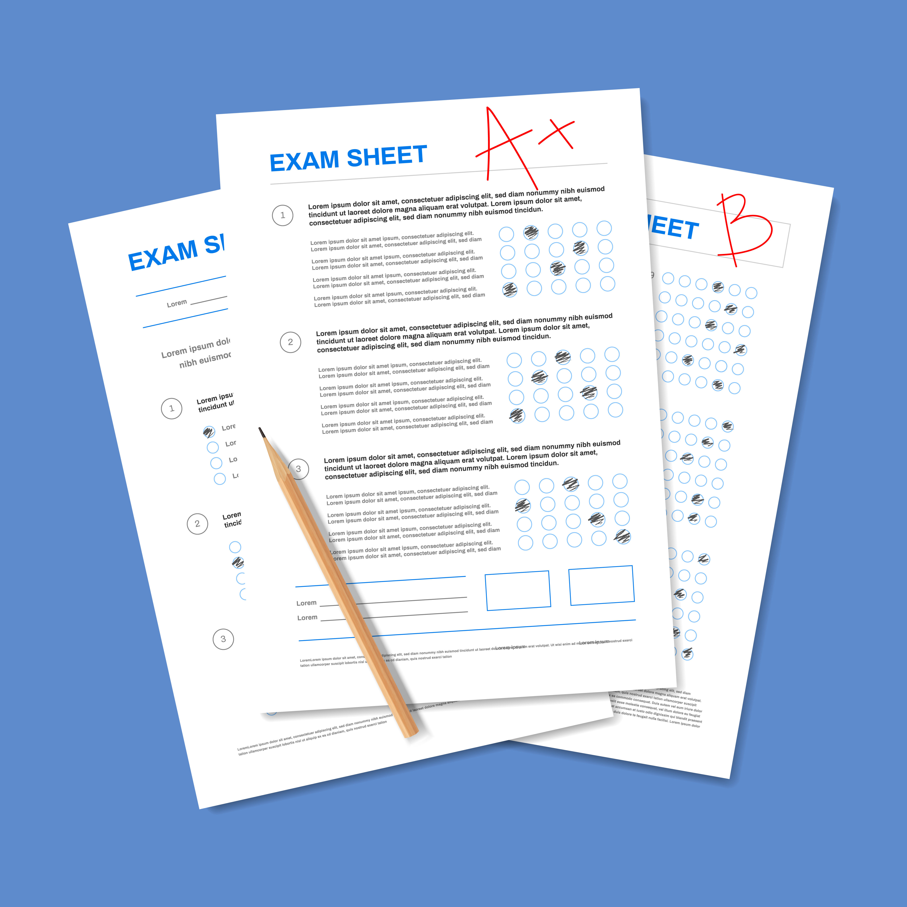
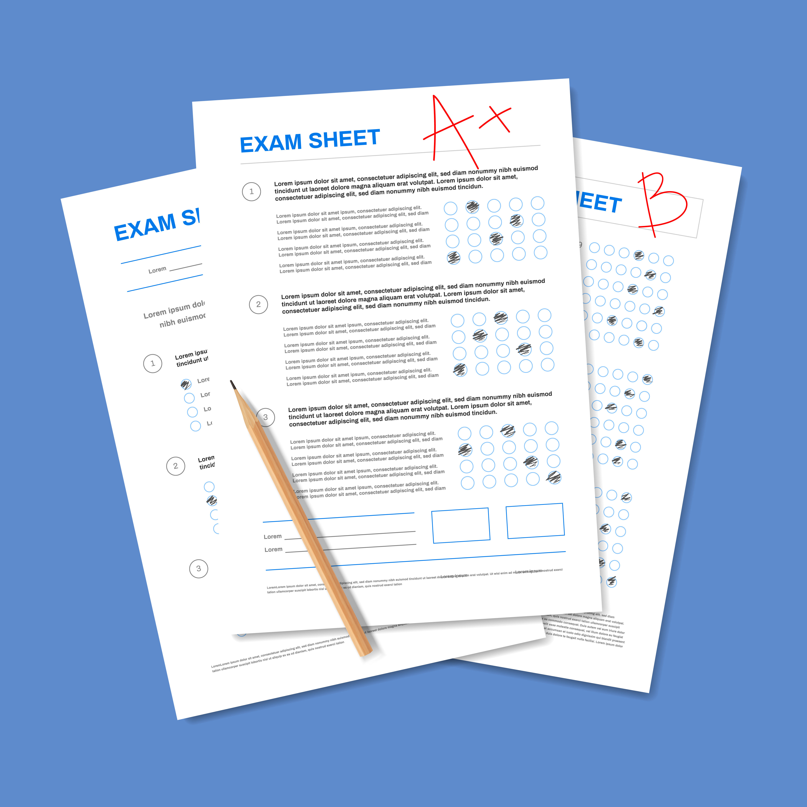

Short Story (Hadiah yang Sempurna)
Hadiah yang Sempurna
Oleh Amira Nabila Rachman
Di hari Minggu yang cerah, Aurora bermain ke rumah Mita.
Mereka berdua sudah menjadi sahabat sejak kelas 3 SD. Wajah Mita terlihat sangat sedih.
“Mita, kenapa sih kamu sedih?” tanya Aurora.
“Soalnya ayahku mau pindah ke Sulawesi. Aku juga harus ikut,” jawab Mita.
Aurora ikut sedih karena mereka akan berpisah.
Aurora ingin membuat hadiah untuk Mita sebagai kenang-kenangan, tetapi ia bingung hadiahnya apa.
“Apa ya hadiah paling pas buat Mita?” pikir Aurora.
Beberapa hari kemudian, ibu guru memberikan pengumuman bahwa akan ada kunjungan ke pantai.
“Hore!” Semua anak sangat gembira mendengar hal itu. Begitu juga Aurora dan Mita.
“Aku senang pergi ke pantai. Aku suka laut yang biru dan pasir putih,” kata Mita.
“Aku akan membuat istana pasir,” tambah Aurora.
Hari yang murid-murid tunggu pun tiba. Pagi itu, semua murid berkumpul di halaman sekolah.
Para murid asyik mengobrol di perjalanan menuju pantai. Hingga akhirnya mereka sampai di tujuan.
Mereka sangat senang. Ada yang langsung foto-foto, ada yang mengobrol di tepi pantai, dan lain-lain.
Betapa terkejutnya kedua sahabat itu. Pantai itu sangat kotor.
Sampah berserakan di mana-mana. Ada bungkus es krim, kotak minuman, plastik mentega, plastik kecap, dan masih banyak lagi.
Keduanya menjadi sedih.
“Duh, siapa ya yang membuang sampah sembarangan begini?” tanya Aurora.
“Mungkin para pengunjung pantai yang lain,” jawab Mita. “Bisa juga sampah itu terbawa ombak dari laut.”
“Aku mau pulang aja, deh, kalau begini,” kata Aurora lagi. “Aku malas kalau pantainya kotor begini.”
“Eh, jangan pulang dulu, dong. Justru kita harus membersihkan pantai ini,” sergah Mita.
“Untuk apa? Ini, kan bukan tanggung jawab kita,” kata Aurora.
“Menjaga lingkungan hidup itu tanggung jawab semua orang,” tambah Mita.
“Lagipula kalau kita biarkan begitu saja, makhluk lain akan menderita. Hewan-hewan di laut akan mati.
Mereka akan memakan sampah itu.”
“Tapi kita ke sini, kan buat bersenang-senang.”
“Ini juga menyenangkan, kok,” bujuk Mita. “Sebentar saja.”
Aurora sebenarnya malas, tapi akhirnya ia mau membantu. Tidak ada salahnya juga, pikirnya.
Akhirnya Aurora mengikuti langkah Mita.
Mita sibuk memunguti beberapa sampah plastik, seperti botol minuman, kotak minuman, sedotan, plastik snack.
Mereka juga mengajak teman yang lain ikut membantu. Ternyata mereka mau membantu Aurora dan Mita.
Bu Guru senang sekali karena Mita dan Aurora memberikan contoh yang baik.
Tak lama kemudian mereka duduk bersama di pinggir pantai.
Sekarang hamparan pasir di tepi pantai sudah jauh lebih bersih dan terlihat indah.
Suasana terasa nyaman dan menyenangkan.
“Kalau sudah bersih begini, kan enak pantainya,” puji Mita.
“Iya. Kita bisa bermain pasir dan membuat istana pasir dengan nyaman. Kita tidak perlu takut tiba-tiba menyerok plastik,” ujar Aurora.
“Sayang ya kamu mau pindah. Kalau tidak, kita bisa kembali bermain ke pantai ini,” tambahnya.
“Seandainya kita bersama-sama terus ya.”
“Eh, Mita,” kata Aurora tiba-tiba. “Kita foto bersama dulu, ya. Supaya ada kenang-kenangan hari ini.”
“Ayo!”
Mereka bergaya dan berfoto bersama. Setelah berfoto, Aurora melihat ke tumpukan sampah yang telah mereka kumpulkan.
“Eh, Mita, ngomong-ngomong sampah itu bisa digunakan untuk apa saja, ya?”
“Banyak. Misalnya untuk didaur ulang menjadi beragam barang, seperti tikar, pigura, tas, dan lain-lain,” kata Mita.
“Oh, begitu,” Aurora mengangguk-angguk. Mendadak ia terpikir sebuah ide.
Setelah satu bulan acara piknik ke pantai, Mita pun pindah.
Saat mereka berpisah, Aurora memberikan hadiah perpisahan.
Sebelum Mita pergi, mereka berpelukan sangat erat. Berat rasanya berpisah dengan sahabat.
Di pesawat, Mita membuka hadiah itu. Mita terkejut.
Ternyata Aurora membuat pigura dengan hiasan di pinggir dari kemasan sampah plastik yang mereka kumpulkan dulu.
Di dalamnya ada foto mereka bersama di pantai dengan latar belakang sampah-sampah plastik yang sudah mereka kumpulkan.
Di foto tersebut terdapat tulisan :
Untuk sahabatku yang mencintai pantai. Semoga kenangan bersama di pantai itu selalu bersamamu.
Mita meneteskan air mata karena terharu. Itu adalah hadiah yang sempurna untuk Mita.


 
